In Lab 7 I built a proximity search API. You give it a position, a category (bank, cafe, hospital and so on), a radius and a road-link file, and it returns the 10 nearest places by road distance using Dijkstra on the road graph. It is a FastAPI app with a small HTML page for the UI. For this lab I put it in Docker so the whole thing starts with one command, docker compose up -d --build. Everything was done on my own MacBook (Apple M-series, macOS 15).
In Lab 7 the API also served the web page, so it was one process. I split it into two services so each one has its own Dockerfile and its own job:
Browser ──▶ localhost:8088 ──▶ [ web: nginx ] ──/search/──▶ [ api: FastAPI + NumPy ]
frontend + backend network backend network only
./data mounted at /data (read-only)
index.html and forwards every /search/ request to the API. It is the only container with a port open on my laptop.| Choice | What I used | Why |
|---|---|---|
| Base image (api) | python:3.13-slim | Same Python version as my Render deployment. The slim image is much smaller than the full one, and NumPy installs from a ready-made wheel, so no compilers are needed. Final image: 316 MB. |
| Base image (web) | nginx:1.27-alpine | Tiny (76 MB) and made for serving static files and reverse proxying. Its built-in template feature fills environment variables into the config at start-up. |
| Ports | web: host 8088 → container 80. api: 8000, expose only | Only one port is open to the outside. The host port comes from .env, which turned out to matter because 8080 was already taken (Section 3). |
| Networks | frontend (web) and backend (web + api) | Two user-defined bridge networks. On them, containers find each other by service name, so nginx just uses http://api:8000 and no IP addresses are hard-coded. |
| Volumes | Bind mount ./data:/data:ro on api | Road-link files can be dropped into data/ and used by name (link=sample_link.txt) without rebuilding the image. Read-only, because the API only needs to read them. |
| Environment variables | .env: WEB_PORT, API_WORKERS, LOG_LEVEL.api: PORT, WORKERS, LINK_DIR, LOCATIONS_CSV.web: API_HOST, API_PORT | Settings can change without editing the Dockerfiles or the code. The Dockerfiles set sensible defaults with ENV, and compose overrides them. |
| Start-up order | HEALTHCHECK in both images, plus depends_on: condition: service_healthy | nginx only starts once the API has actually loaded the 10,000 locations and answers /health, not just when its container has started. |
| Other | Non-root appuser, restart: unless-stopped, .dockerignore, requirements copied before the code | Safer, restarts after a crash, keeps junk out of the image, and the slow pip install layer is cached when only app.py changes. |
The only change to the Lab 7 code was in app.py: a LINK_DIR variable so link files can be read from the mounted /data folder, and a small /health route for the health check.
# api/Dockerfile
# Proximity Search API (FastAPI + NumPy)
FROM python:3.13-slim
# No .pyc files, unbuffered logs so `docker logs` shows output straight away
ENV PYTHONDONTWRITEBYTECODE=1 \
PYTHONUNBUFFERED=1 \
PORT=8000 \
WORKERS=1 \
LOG_LEVEL=info \
LOCATIONS_CSV=/app/locations.csv \
LINK_DIR=/data
WORKDIR /app
# Dependencies first, so this layer is cached when only the code changes
COPY requirements.txt .
RUN pip install --no-cache-dir -r requirements.txt
COPY app.py locations.csv ./
# Run as a normal user instead of root
RUN useradd --create-home appuser
USER appuser
EXPOSE 8000
HEALTHCHECK --interval=10s --timeout=3s --start-period=10s --retries=3 \
CMD python -c "import os, urllib.request; urllib.request.urlopen(f'http://localhost:{os.environ[\"PORT\"]}/health', timeout=2)"
CMD ["sh", "-c", "uvicorn app:app --host 0.0.0.0 --port $PORT --workers $WORKERS --log-level $LOG_LEVEL"]
# web/Dockerfile
# Web front end: nginx serves the UI and forwards API calls to the api service
FROM nginx:1.27-alpine
# Where to find the API; filled into the config by the nginx image at start-up
ENV API_HOST=api \
API_PORT=8000
# Files in /etc/nginx/templates are run through envsubst into /etc/nginx/conf.d
COPY nginx.conf.template /etc/nginx/templates/default.conf.template
COPY index.html /usr/share/nginx/html/index.html
EXPOSE 80
HEALTHCHECK --interval=10s --timeout=3s --retries=3 \
CMD wget -q -O /dev/null http://127.0.0.1/ || exit 1
# web/nginx.conf.template
server {
listen 80;
server_name _;
# Link files can be a few hundred KB
client_max_body_size 10m;
client_body_buffer_size 1m; # keep uploads in memory (avoids "buffered to a temporary file" warnings)
root /usr/share/nginx/html;
index index.html;
# The UI, also kept at /ui like the original app
location = /ui { try_files /index.html =404; }
location / { try_files $uri $uri/ /index.html; }
# API calls go to the api container over the Docker network
location ~ ^/(search|health) {
proxy_pass http://${API_HOST}:${API_PORT};
proxy_set_header Host $host;
proxy_set_header X-Real-IP $remote_addr;
proxy_read_timeout 60s;
}
}
# docker-compose.yml
# Proximity Search API - full stack with one command: docker compose up -d --build
name: proximity-search
services:
api:
build: ./api
image: proximity-api:1.0
container_name: proximity-api
environment:
PORT: 8000
WORKERS: ${API_WORKERS:-2}
LOG_LEVEL: ${LOG_LEVEL:-info}
LINK_DIR: /data
volumes:
- ./data:/data:ro # link files, editable on the host without rebuilding
networks:
- backend
expose:
- "8000" # reachable by other containers only, not published to the host
restart: unless-stopped
web:
build: ./web
image: proximity-web:1.0
container_name: proximity-web
environment:
API_HOST: api # the service name works as a hostname on the Docker network
API_PORT: 8000
ports:
- "${WEB_PORT:-8080}:80" # the only port opened on the host
networks:
- frontend
- backend
depends_on:
api:
condition: service_healthy # start nginx only after the API passes its health check
restart: unless-stopped
networks:
frontend:
backend:
# .env
# Settings read by docker-compose.yml
WEB_PORT=8088
API_WORKERS=2
LOG_LEVEL=info
# Project layout
Lab_Docker_12341060/
├── docker-compose.yml
├── .env
├── api/
│ ├── Dockerfile
│ ├── .dockerignore
│ ├── app.py
│ ├── requirements.txt
│ └── locations.csv
├── web/
│ ├── Dockerfile
│ ├── .dockerignore
│ ├── nginx.conf.template
│ └── index.html
└── data/
└── sample_link.txt
Docker wasn't installed on my Mac. Instead of Docker Desktop I used Colima, a free, open-source tool that runs the Docker engine inside a small Linux VM. I installed it and the Docker CLI tools with Homebrew:
brew install colima docker docker-compose docker-buildx
Homebrew installs Compose and Buildx as plugins, so I added "cliPluginsExtraDirs": ["/opt/homebrew/lib/docker/cli-plugins"] to ~/.docker/config.json so that docker compose works.
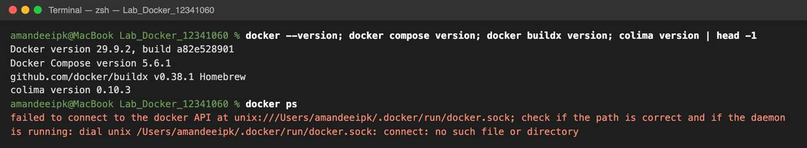
docker ps failed because no Docker engine was running yet (error 1 in Section 3).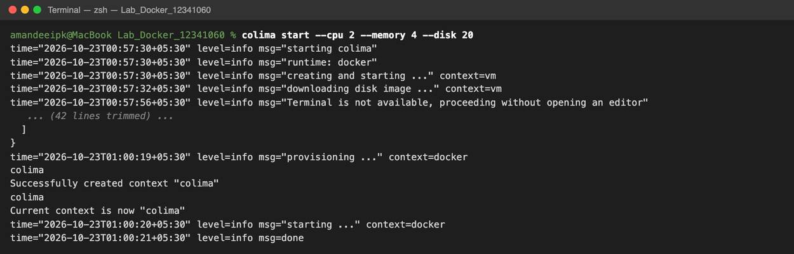
colima start --cpu 2 --memory 4 --disk 20 downloads an Ubuntu VM, starts the Docker engine inside it, and switches the Docker context to colima.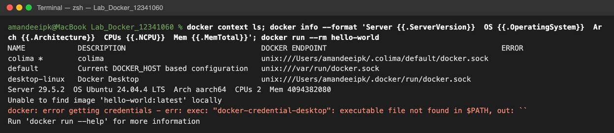
docker-credential-desktop: executable file not found (error 2).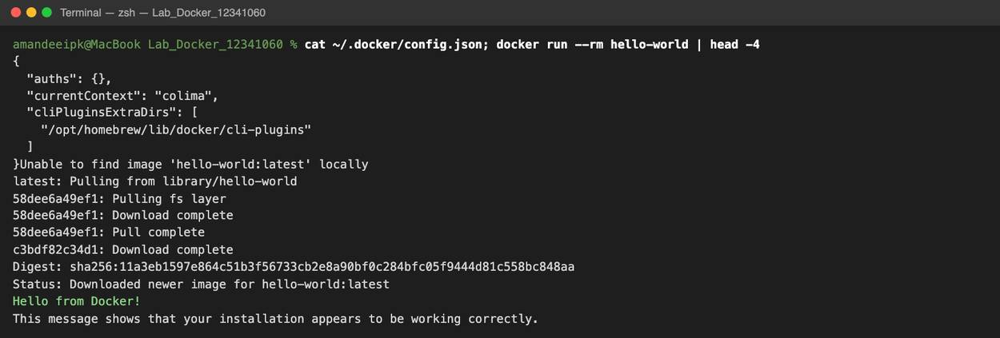
~/.docker/config.json, hello-world pulled and ran, so Docker was working.I first checked the compose file with docker compose config, then built both images and started everything with one command:
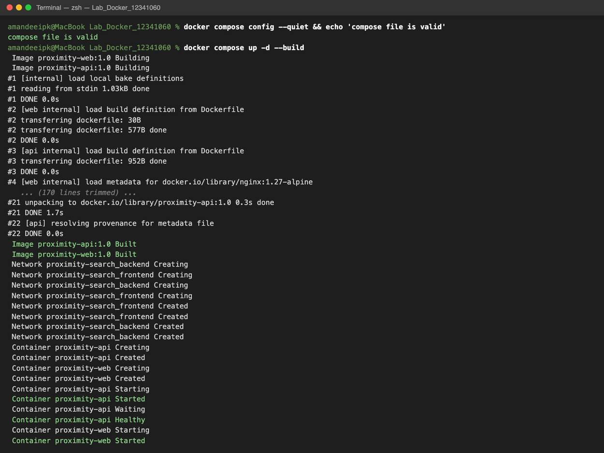
docker compose up -d --build builds both images, creates the two networks, starts the API, waits until it is Healthy, and only then starts nginx. The middle of the build log is trimmed.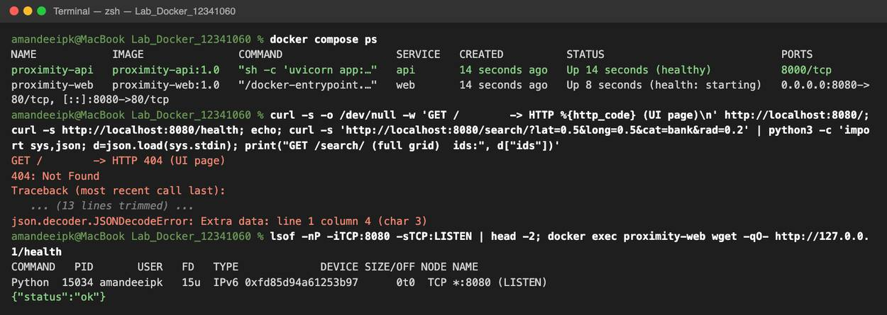
http://localhost:8080 returned a plain "404: Not Found" that didn't come from nginx (error 3). lsof showed an old Python load balancer from another lab still listening on 8080. Inside the container, nginx itself was fine.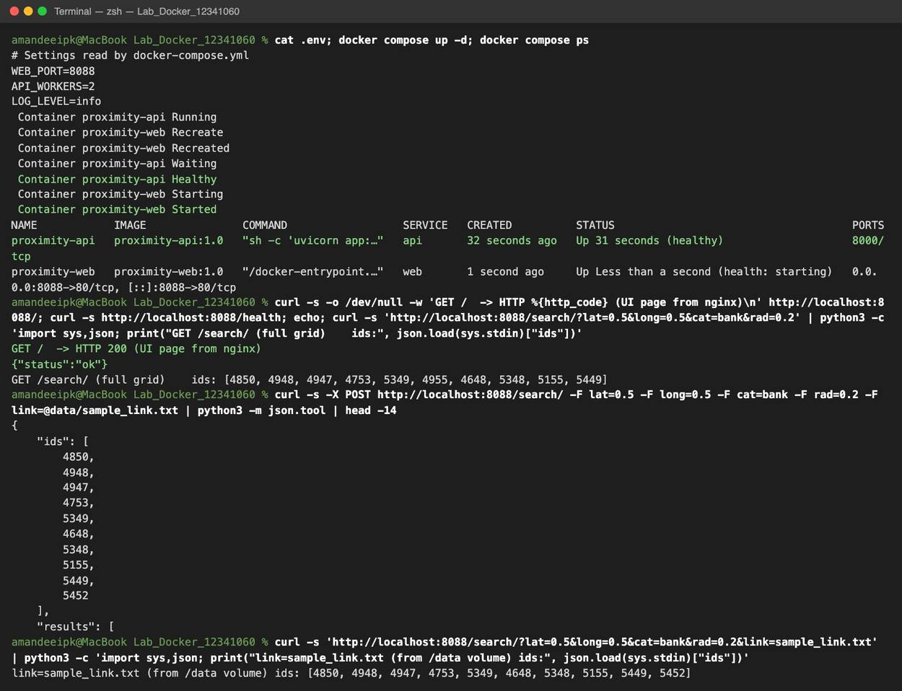
WEB_PORT to 8088 in .env and ran docker compose up -d, which recreated only the web container. Then I tested the API: the UI returns HTTP 200, a search on the full grid works, uploading sample_link.txt works, and so does giving the link file by name from the mounted /data volume. The 10 IDs are the same as in my Lab 7 report.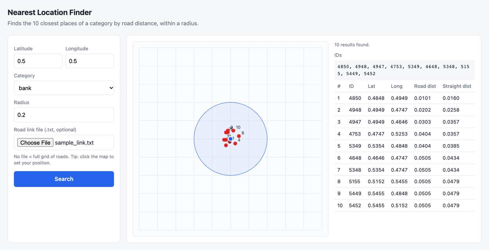
http://localhost:8088, now served by the nginx container. I uploaded sample_link.txt and searched for banks within 0.2 of (0.5, 0.5); the request went through nginx to the API container.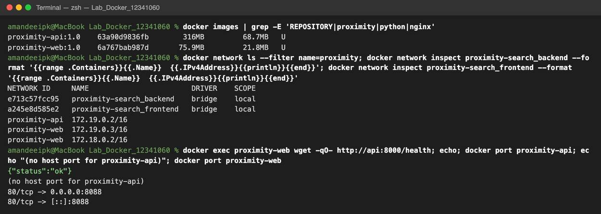
backend, while web is on both. From inside the web container, http://api:8000 works by service name. docker port shows that the API has no host port at all.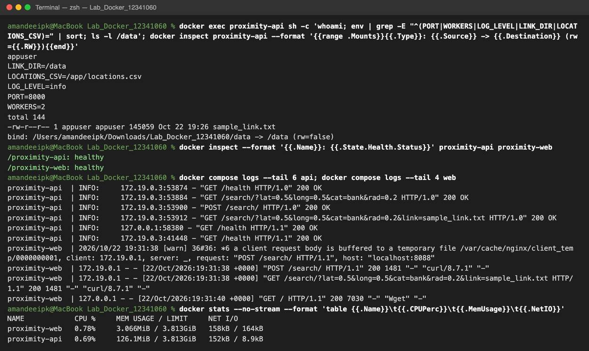
appuser, not root, the environment variables from compose are set, and ./data is bind-mounted at /data read-only. Both health checks pass. The logs show requests arriving at the API from nginx (172.19.0.3), and docker stats shows the API using about 126 MB and nginx about 3 MB.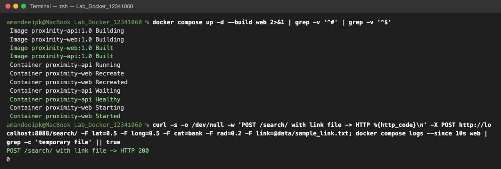
docker compose up -d --build web rebuilt and recreated only the web container. The API kept running.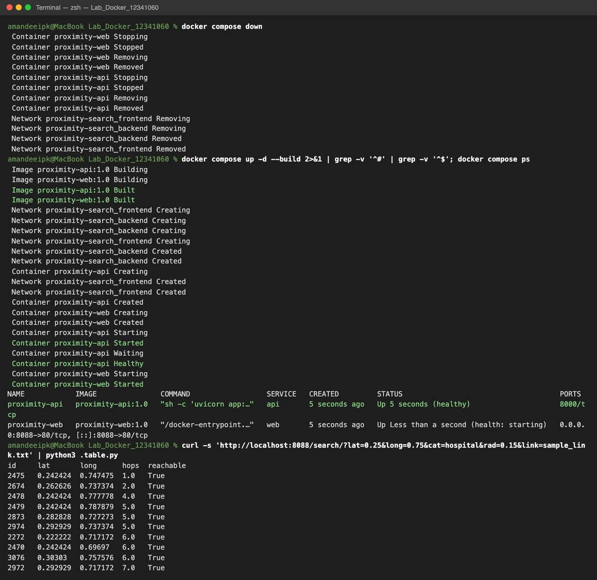
docker compose down removes everything, then the single command docker compose up -d --build brings the whole stack back. A new query (hospitals near (0.25, 0.75) using the link file) returns 10 reachable results (.table.py was a tiny script I used to print the JSON as a table).| # | Error | Cause | Fix |
|---|---|---|---|
| 1 | failed to connect to the docker API at unix:///Users/.../.docker/run/docker.sock | Installing the Docker CLI doesn't install an engine. The CLI was also still set to an old Docker Desktop context (desktop-linux) whose socket no longer exists. | Started the engine with colima start, which also created and switched to the colima context (checked with docker context ls). |
| 2 | error getting credentials - exec: "docker-credential-desktop": executable file not found in $PATH | The old Docker Desktop install had left "credsStore": "desktop" in ~/.docker/config.json, but that helper program is gone, so every image pull failed. | Backed up the config and removed the credsStore line. Pulls worked straight away. |
| 3 | localhost:8080 returned "404: Not Found" (and the JSON parse in my test failed) | Port 8080 on my Mac was already used by a Python load balancer from an earlier lab, which answered first. nginx was fine (docker exec ... wget returned OK). | Found it with lsof -iTCP:8080. Rather than kill another project, I changed WEB_PORT=8088 in .env. No Dockerfile or code change was needed. |
| 4 | nginx warning: a client request body is buffered to a temporary file | The road-link file is about 145 KB, bigger than nginx's default 16 KB body buffer, so every upload was written to disk first. | Added client_body_buffer_size 1m; to the nginx config and rebuilt only the web service. The warning no longer appears. |
Port 8000 on my Mac was also in use, by another project's app. That didn't cause a problem only because the API container doesn't publish its port to the host.
In the order I ran them:
brew install colima docker docker-compose docker-buildx
docker --version; docker compose version; docker buildx version; colima version
docker ps # failed: no engine yet
colima start --cpu 2 --memory 4 --disk 20
docker context ls
docker info
docker run --rm hello-world # failed (credsStore), then worked after the fix
docker compose config --quiet
docker compose up -d --build
docker compose ps
docker exec proximity-web wget -qO- http://127.0.0.1/health
docker compose up -d # after changing WEB_PORT in .env
docker images
docker network ls --filter name=proximity
docker network inspect proximity-search_backend
docker exec proximity-web wget -qO- http://api:8000/health
docker port proximity-api; docker port proximity-web
docker exec proximity-api sh -c 'whoami; env; ls -l /data'
docker inspect proximity-api --format '{{range .Mounts}}...{{end}}'
docker inspect --format '{{.State.Health.Status}}' proximity-api proximity-web
docker compose logs --tail 6 api
docker stats --no-stream
docker compose up -d --build web
docker compose down
docker compose up -d --build
| Command | Purpose |
|---|---|
colima start | Starts the Linux VM that runs the Docker engine on macOS (with CPU, memory and disk limits) |
docker --version / docker compose version | Checks that the CLI and the Compose plugin are installed |
docker context ls | Lists the Docker engines the CLI can talk to and shows which one is active |
docker info | Shows details of the engine: version, OS, architecture, CPUs and memory |
docker run --rm hello-world | Pulls and runs a test image to check the installation, then removes the container |
docker ps | Lists running containers (also a quick check that the engine is reachable) |
docker compose config | Validates the compose file and fills in the .env values |
docker compose up -d --build | Builds the images, creates the networks and starts all services in the background |
docker compose up -d --build web | Rebuilds and restarts just one service |
docker compose ps | Shows the project's containers, their health status and ports |
docker compose logs | Shows the output (logs) of the services |
docker compose down | Stops and removes the project's containers and networks |
docker images | Lists local images and their sizes |
docker network ls / docker network inspect | Lists networks, and shows which containers are on a network and their IPs |
docker exec | Runs a command inside a running container (used to test DNS, the environment and mounts) |
docker port | Shows which container ports are published on the host |
docker inspect | Shows low-level details of a container, like mounts and health status |
docker stats --no-stream | One snapshot of each container's CPU, memory and network use |
Before this lab I thought of Docker as just "running my app in a box". Splitting the app into two services made me think about how the containers talk to each other. The nicest part was that nginx can reach the API as just http://api:8000, because Docker runs its own DNS on user-defined networks. Also, by not publishing the API's port at all, the API simply isn't reachable from outside, which I could prove with docker port. I also learnt that depends_on on its own only waits for a container to start. To wait until the API is actually ready, I needed a health check and condition: service_healthy.
Most of my errors had nothing to do with my Dockerfiles. They came from my laptop: leftover Docker Desktop settings and a port already used by an old lab. That taught me to read error messages carefully and check the environment (docker context ls, lsof, docker exec into the container) before changing my own files. Keeping the host port in .env paid off immediately: fixing the conflict was a one-line change.
I also understood layer caching better. Because requirements.txt is copied and installed before app.py, rebuilding after a code change skips the slow pip install step. And with a bind-mounted volume, data like link files can change without rebuilding the image at all. In the end the whole stack, which used to mean setting up Python, a virtualenv and the right packages, now starts on any machine with Docker using one command: docker compose up -d --build.